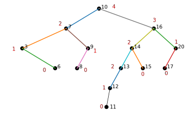
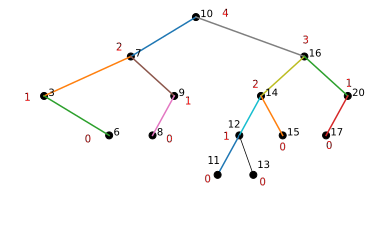
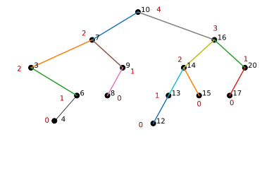
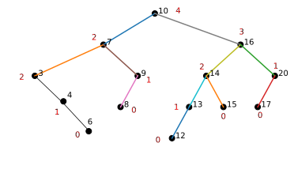
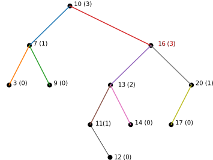

Lab 7: AVL Trees
Chris Tralie
Overview / Logistics
We've seen that in a naive implementation of binary trees, we can get very long branches that devolve to linked lists. This will happen, for example, if we add a bunch of numbers in sorted order. But we've also seen in class that it's possible to rebalance trees using Tree rotations, while preserving the order of the nodes in an inorder traversal. In this lab, we will explore a "self-balancing" data structure known as an AVL tree which performs tree rotations on the fly in O(logN) time to keep the tree balanced; that is, the tree will always have a height within a constant factor of log(N) after an add/delete operation, which means that it will only take O(log(N)) time to do future searches. The animation below shows a working implementation of an AVL tree.
Click here to download the starter notebook for this lab. If you are using Google colab, the notebook is hosted at https://github.com/ursinus-cs271-f2022/Lab7_AVL. Either way, you will need to use jupyter to create the tree plots to check your work.
Your task: Update the add method to rebalance the tree to an AVL tree if it becomes unbalanced. The remove method is very similar, so we'll just focus on add in this lab.
Be sure that your add method runs in O(log(N)) time! As part of this, you should be careful to update your heights in constant time.
When you are finished, upload your Trees.ipynb notebook to canvas.
Background
Recall that the two possible tree rotations are defined as follows:
Note how since the roots change, we return the new root so that we can recursively re-assign children just like we did when removing nodes in the last lab.
An AVL Tree is a tree that, at every node, has a height discrepancy of at most 1 between the left subtree and the right subtree. If a child is null, we assume that its height is -1, and this definition carries through.
If we start with an AVL tree and add a new node to it, it may become unbalanced. The following pseudocode below shows how to rebalance an AVL tree along the path from where the node was added back up to the root
Below are a few examples of this algorithm in action
Example 1
Let's suppose we started with this tree

And we then added a 11 to it, yielding this tree initially
(Note that we haven't updated the height of the parent of 13 yet, so it is not correct). At this point, we find an imbalance at 13. By the algorithm above, we rotate clockwise about 13, and we reach a balanced tree
Example 2
Let's suppose we started with this tree

And we then added a 4 to it, yielding this tree initially
When we go back up to node 3, we will find it's unbalanced to the right. We actually have to do two rotations to rebalance node 3. First, we do clockwise rotation about node 6
Then we do a counter-clockwise rotation about node 3

At this point, we see no further discrepancies on the way back to the root, so the tree is AVL
Example 3
Let's do one more example that shows the power of this algorithm as we recursively walk up the tree. Let's suppose we start with the following tree:

And let's suppose we add a 12 to it. As we walk back up recursively to node 13, we change a few of the heights:

Actually, it doesn't seem like we've violated the AVL property yet! Let's walk up one more and update the height of node 16.
We're still good with the AVL property here! However, if we walk up one more node to the root at 10, we see there's a problem. The left subtree has a height of 1, while the right subtree has a height of 3. This triggers two rotations. First, we do a clockwise rotation about node 16 since we find 16's right subtree height is less than 16's left subtree height:

From here, we do a counter-clockwise rotation about 10 to yield a tree which is finally AVL: